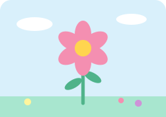

jQuery Garden
Home
Part 1
Part 2
Part 3
Part 4
Part 5
Part 2. jQuery Effects
Task 2. Visibility Methods
You can hide and show this paragraph.
Hide
Show
Toggle
Task 3. Fade Methods
Fade In
Fade Out
Fade Toggle

Task 4. Slide Methods
Slide Up
Slide Down
Slide Toggle
This is a panel. You can open and close it.